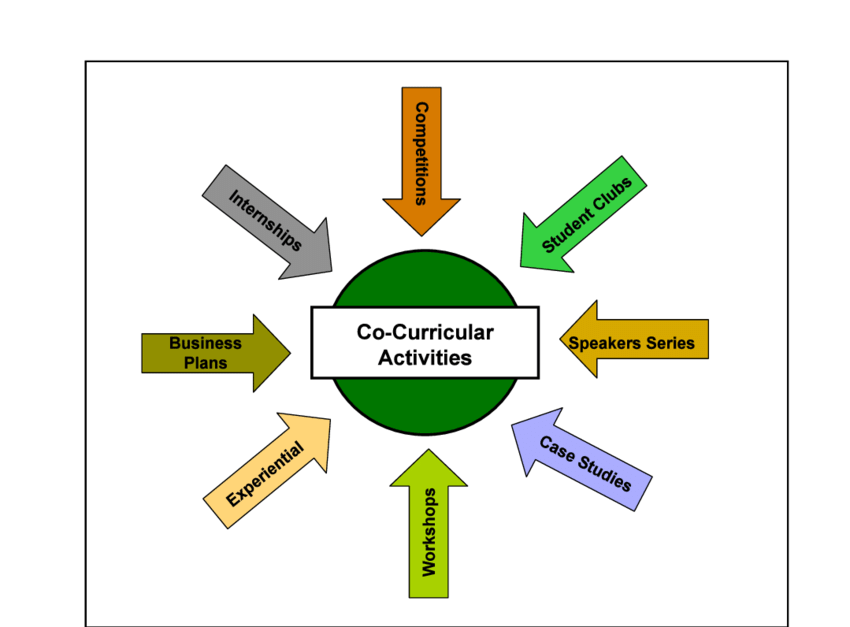

CO-CURRICULAR EXPERIENCE

This page highlights my co-curricular experiences, showcasing my active participation
in leadership roles, student organizations, and community initiatives. Throughout my
academic journey, I have been involved in various university events, student
societies, and technical competitions, allowing me to develop strong teamwork,
leadership, and organizational skills. My contributions range from leading student
associations and organizing workshops to managing multimedia teams and participating
in community-driven projects. These experiences have not only enhanced my
professional and interpersonal skills but have also enabled me to contribute
meaningfully to diverse initiatives. Below is a list of my key co-curricular
activities.
General Secretary - Current Post Graduate Students Society Leadership Universiti Teknologi Malaysia
Vice President (IT & Design Manager) Kolej Dato Onn Jaffar Leadership Universiti Teknologi Malaysia
Treasurer International Students Society Pakistan Leadership Universiti Teknologi Malaysia
Head of Multimedia Unit Majlis Penghargaan Jawatan Kuasa Dan Krew Minggu Mesra Mahahsiswa Award Universiti Teknologi Malaysia
Head of Multimedia Unit Kelab Gerakan Pengguna Siswa Leadership Universiti Teknologi Malaysia
Head of Registration Unit Uniform Bodies, Clubs and Societies (UNBOCS Carnival) Leadership Universiti Teknologi Malaysia
Secretariat Majlis Perwakilan Mahasiswa (MPP) Leadership Universiti Teknologi Malaysia
Committee - Bureau Chief Malam Apresiasi Kelab GPS UTM Johor Bahru Leadership Universiti Teknologi Malaysia
Society Committee American Chemical Society (ACS) UTM International Students Chapter Leadership Universiti Teknologi Malaysia